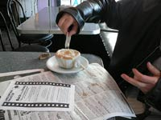
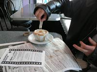

Jolanta Lion
Festival Director
From the finale of Faces of Mechanization until about November, Jolanta’s face, albeit behind dark sunglasses, could still be seen in yoga classes, biking around Pittsburgh, picking up a baguette from the local bakery, attending other film festivals, or in cafés and restaurants, always mingling and scouting film interest. From December until Opening Night of Faces of Realism, Jolanta’s only face is her email account or cell phone as she arranges shipments of films and directors’ accommodations, makes sponsorship requests, squeezes funds from the budget, finalizes schedules and locations, sends long lists of website updates to the design team and then tries to promote the festival with what energy remains. The light at the end of her tunnel will be reaping the rewards of gaining a Malbec distributor as an official festival sponsor. Jolanta’s favorite film is It’s A Free World.

David Shumway
Humanities Center Director
David is the visionary and top investor of the Carnegie Mellon International Film Festival. His favorite film is Forbidden Lie$.
Quelcy Kogel
Writer/Editor
Assistant to Festival Director
While most people think Quelcy’s bakery day job is a way of feeding her bread and butter fix or pretending she’s still living in France (both of which are true), Allegro Hearth Bakery has also been a prime location for detecting all types of international accents and potential audience members. Quelcy’s long winter hibernation has been filled with lots of screenings, writing and editing any festival-related texts, event planning, numerous coffee meetings with Jolanta until emails took over their communication and the occasional cake-centric, theme-party outlet! Quelcy’s immediate response has been “Il DIVO!” when people ask her for her top festival recommendation.
Einhorn Design Team
Jay Einhorn and his crew of creators are remembering the days when they used to complain about clients with whom it was difficult to get in touch. They will all breathe a big sigh of relief when the festival website is complete, the programs are printed, the trailer is on the big screen and Jolanta is too distracted by Malbec to fill their inboxes with email to-do lists. They’re also looking forward to the screening of Momma’s Man.